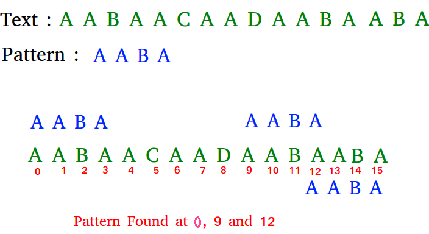

Given a text txt[0..n-1] and a pattern pat[0..m-1], write a function search(char pat[], char txt[]) that prints all occurrences of pat[] in txt[]. You may assume that n > m.
Input: txt[] = "THIS IS A TEST TEXT"
pat[] = "TEST"
Output: Pattern found at index 10
Input: txt[] = "AABAACAADAABAABA"
pat[] = "AABA"
Output: Pattern found at index 0
Pattern found at index 9
Pattern found at index 12
EXPLANATION:
ALGORITHM:
Searching Algorithm
We use a value from lps[] to decide the next characters to be matched. The idea is to not match a character that we know will anyway match.JAVA CODE:
// JAVA program for implementation of KMP pattern // searching algorithm
class KMP_String_Matching { void KMPSearch(String pat, String txt) { int M = pat.length(); int N = txt.length();// create lps[] that will hold the longest // prefix suffix values for pattern
int lps[] = new int[M]; int j = 0;// index for pat[] // Preprocess the pattern (calculate lps[] array)
computeLPSArray(pat, M, lps); int i = 0;// index for txt[]
while (i < N) { if (pat.charAt(j) == txt.charAt(i)) { j++; i++; } if (j == M) { System.out.println("Found pattern " + "at index " + (i - j)); j = lps[j - 1]; }// mismatch after j matches
else if (i < N && pat.charAt(j) != txt.charAt(i)) {// Do not match lps[0..lps[j-1]] characters, they will match anyway
if (j != 0) j = lps[j - 1]; else i = i + 1; } } } void computeLPSArray(String pat, int M, int lps[]) {// length of the previous longest prefix suffix
int len = 0; int i = 1; lps[0] = 0;// lps[0] is always 0 // the loop calculates lps[i] for i = 1 to M-1
while (i < M) { if (pat.charAt(i) == pat.charAt(len)) { len++; lps[i] = len; i++; } else// (pat[i] != pat[len])
{// This is tricky. Consider the example. // AAACAAAA and i = 7. The idea is similar to search step.
if (len != 0) { len = lps[len - 1];// Also, note that we do not increment i here
} else// if (len == 0)
{ lps[i] = len; i++; } } } }// Driver program to test above function
public static void main(String args[]) { String txt = "ABABDABACDABABCABAB"; String pat = "ABABCABAB"; new KMP_String_Matching().KMPSearch(pat, txt); } }
EXAMPLE:
EXPLANATION:
JAVA CODE:
// Following program is a Java implementation // of Rabin Karp Algorithm given in the CLRS book
public class Main {// d is the number of characters in the input alphabet
public final static int d = 256;/* pat -> pattern txt -> text q -> A prime number */
static void search(String pat, String txt, int q) { int M = pat.length(); int N = txt.length(); int i, j; int p = 0;// hash value for pattern
int t = 0;// hash value for txt
int h = 1;// The value of h would be "pow(d, M-1)%q"
for (i = 0; i < M-1; i++) h = (h*d)%q;// Calculate the hash value of pattern and first // window of text
for (i = 0; i < M; i++) { p = (d*p + pat.charAt(i))%q; t = (d*t + txt.charAt(i))%q; }// Slide the pattern over text one by one
for (i = 0; i <= N - M; i++) {// Check the hash values of current window of text // and pattern. If the hash values match then only // check for characters on by one
if ( p == t ) {/* Check for characters one by one */
for (j = 0; j < M; j++) { if (txt.charAt(i+j) != pat.charAt(j)) break; }// if p == t and pat[0...M-1] = txt[i, i+1, ...i+M-1]
if (j == M) System.out.println("Pattern found at index " + i); }// Calculate hash value for next window of text: Remove // leading digit, add trailing digit
if ( i < N-M ) { t = (d*(t - txt.charAt(i)*h) + txt.charAt(i+M))%q;// We might get negative value of t, converting it // to positive
if (t < 0) t = (t + q); } } }/* Driver Code */
public static void main(String[] args) { String txt = "GEEKS FOR GEEKS"; String pat = "GEEK";// A prime number
int q = 101;// Function Call
search(pat, txt, q); } }
EXPLANATION:
Syntax
public final class StringBuilder
extends Object
implements Serializable, CharSequence
Constructors in Java StringBuilder:
1) StringBuilder(): Constructs a string builder with no characters in it and an initial capacity of 16 characters.
2) StringBuilder(int capacity): Constructs a string builder with no characters in it and an initial capacity specified by the capacity argument.
3) StringBuilder(CharSequence seq): Constructs a string builder that contains the same characters as the specified CharSequence.
4) StringBuilder(String str):Constructs a string builder initialized to the contents of the specified string.
JAVA CODE:
// Java code to illustrate StringBuilder
import java.util.*; import java.util.concurrent.LinkedBlockingQueue; public class GFG1 { public static void main(String[] argv) throws Exception {// create a StringBuilder object // usind StringBuilder() constructor
StringBuilder str = new StringBuilder(); str.append("GFG");// print string
System.out.println("String = " + str.toString());// create a StringBuilder object // usind StringBuilder(CharSequence) constructor
StringBuilder str1 = new StringBuilder("AAAABBBCCCC");// print string
System.out.println("String1 = " + str1.toString());// create a StringBuilder object // usind StringBuilder(capacity) constructor
StringBuilder str2 = new StringBuilder(10);// print string
System.out.println("String2 capacity = " + str2.capacity());// create a StringBuilder object // usind StringBuilder(String) constructor
StringBuilder str3 = new StringBuilder(str1);// print string
System.out.println("String3 = " + str3.toString()); } }
// Java code to illustrate // methods of StringBuilder
import java.util.*; import java.util.concurrent.LinkedBlockingQueue; public class GFG1 { public static void main(String[] argv) throws Exception {// create a StringBuilder object // with a String pass as parameter
StringBuilder str = new StringBuilder("AAAABBBCCCC");// print string
System.out.println("String = " + str.toString());// reverse the string
StringBuilder reverseStr = str.reverse();// print string
System.out.println("Reverse String = " + reverseStr.toString());// Append ', '(44) to the String
str.appendCodePoint(44);// Print the modified String
System.out.println("Modified StringBuilder = "+ str);// get capacity
int capacity = str.capacity();// print the result
System.out.println("StringBuilder = " + str); System.out.println("Capacity of StringBuilder = " + capacity); } }
Given an array of characters chars, compress it using the following algorithm:
Begin with an empty string s. For each group of consecutive repeating characters in chars:
1)If the group's length is 1, append the character to s.
2)Otherwise, append the character followed by the group's length.
The compressed string s should not be returned separately, but instead be stored in the input character array chars. Note that group lengths that are 10 or longer will be split into multiple characters in chars.
After you are done modifying the input array, return the new length of the array.
Input: chars = ["a","a","b","b","c","c","c"] Output: Return 6, and the first 6 characters of the input array should be: ["a","2","b","2","c","3"] Explanation: The groups are "aa", "bb", and "ccc". This compresses to "a2b2c3". Input: chars = ["a","a","a","b","b","a","a"] Output: Return 6, and the first 6 characters of the input array should be: ["a","3","b","2","a","2"]. Explanation: The groups are "aaa", "bb", and "aa". This compresses to "a3b2a2". Note that each group is independent even if two groups have the same character.
ALGORITHM:
JAVA CODE:
class Solution {
public int compress(char[] chars) {
int anchor = 0, write = 0;
for (int read = 0; read < chars.length; read++) {
if (read + 1 == chars.length || chars[read + 1] != chars[read]) {
chars[write++] = chars[anchor];
if (read > anchor) {
for (char c: ("" + (read - anchor + 1)).toCharArray()) {
chars[write++] = c;
}
}
anchor = read + 1;
}
}
return write;
}